Chapter 7 Sleep Deprivation and Software Engineering Performance
7.1 “Pulling an All-Nighter”
Whether you stocked up on coffee and snacks and holed up in the library to finish programming that project due tomorrow, or stayed up all night playing video games until your eyes can only squint, perhaps you are familiar with what the next day feels like after a night without sleep. Unfortunatlely, studies suggest that sleep deprivation is cognitively comparable to being drunk, with impairments to memory, reasoning, reaction time, and decision making. I think we can all agree that everyone would prefer that critical software was not made by a drunk programmer. But is it really that bad? Especially given the trope that programmers are up all night shouting into their gaming headsets or hacking the CIA, how bad could it really be to lose a little sleep? Answer: bad. It’s really bad. This lesson will walk us through just how bad it is to be sleep deprived while trying to write code, and teach you how to interpret experiment design and results of an academic paper. Hopefully by the end, you’ll understand statistical concepts like: experimental design, hypothesis testing, mean, variance, standard deviation, the normal distribution, Type I and Type II errors, Bonferroni correction, correlation, Cliff’s delta (effect size), and the Kruskall Wallis Test. And hopefully you’ll realize how abysmal your code will be if you forgo those extra hours to order 3am pizza.
# there is actually A LOT to unpack here. All mean/variance/sd/normal distribution stuff should be covered before this lesson, including basic comparison between groups; perhaps in the holiday lesson
# we get a little messy when we get to nonparametric tests, effect size, and particularly the bonferroni correction. not sure how deeply I'd like to touch on that, but basically gonna say "when you start fishing around in your data, you're bound to find something significant and that's bad science. so we use this special correction to make sure it's actually *less* likely we find significance, so that we are conservative and therefore more confident in our results*7.2 Research Question
This lesson will discuss and follow the methods of Need for Sleep: the Impact of a Night of Sleep Deprivation on Novice Developers’ Performance.(Fucci et al., 2018) This will allow you to get practice reading academic research, while also testing out their analysis methods in R.
Given that we know sleep deprivation affects cognitive functioning, it wouldn’t necessarily be the most interesting question to ask if sleep deprivation affects programming, but rather, how much? The authors form their first research question as the following:
“To what extent does sleep deprivation impact developers’ performance?”
Immediately, you can tell that we are not going over a “Yes” or “No” response, but some kind of measure of effect size, and some kind of operationalization of what “performance” really is. Remember that every measure must be carefully defined; and no measure will perfectly capture a larger concept like “performance”, “creativity”, or “skill”. Before we begin describing the methods in the paper, try to think of how you might measure developer performance. What would you have the participants do? How would you determine success or failure? Next, how would you check how much sleep deprivation was affecting that measure?
7.3 Who are the participants?
Let’s start by getting to know our participants, particularly between the conditions (Sleep Deprivaton vs. Regular Sleep)
library(readxl)
library(ggplot2)
subTable <- function(data, nameCol, val){
return (data[which(data[nameCol] == val),])
}
# loading data including the sleep deprived set where we remove some particpants
loadAllData <- function(fileName = "data/sleepDepr/piglatin.xlsx"){
Exp <<- read_xlsx(fileName)
Exp_Cleaned <<- subTable(Exp, "PVT-remove", "NO")
SlD <<- subTable(Exp, "METHOD", "SD")
NOSD <<- subTable(Exp, "METHOD", "RS")
SD_Cleaned <<- subTable(SlD, "PVT-remove", "NO")
NOSD_Cleaned <<- subTable(NOSD, "PVT-remove", "NO")
}
loadAllData()
# this is the post-questionnaire
post <- read_xlsx("data/sleepDepr/post-questionnaire.xlsx")
#merging things together so we can work with one dataframe
data <- merge(Exp,post,by="ID")
SD_Cleaned$METHOD= "SD Cleaned"
SD_Cleaned <- merge(SD_Cleaned,post,by="ID")
data <- rbind(data,SD_Cleaned)
#who is in what condition?
plt = ggplot(data,aes(METHOD,fill=METHOD))+
geom_histogram(stat="count")+
ggtitle("Distribution of Participants to Conditions")+
theme_bw()
plt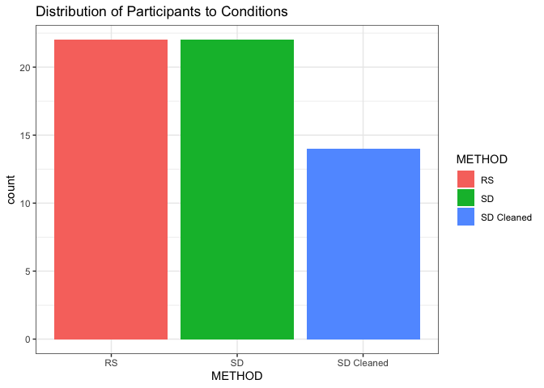
# 22 in RS, 22 in SD, 14 in cleaned set (different from in the paper, but just by 1)
kable(table(data$METHOD))| Var1 | Freq |
|---|---|
| RS | 22 |
| SD | 22 |
| SD Cleaned | 14 |
#density plot showing age distribution. We see that age is probably significantly different between those who could forgo an entire night of sleep and those who could not. That's expected, and ethically non-controllable anyways. The authors conducted tests to make sure there was no interactions of age on the software quality measures
plt = ggplot(data,aes(Age,fill=METHOD))+
geom_density(position="dodge",bins = 30,alpha=.5)+
ggtitle("Age by Condition")+
theme_bw()
plt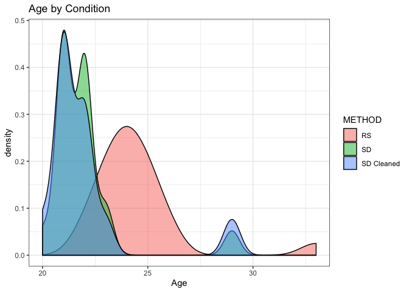
nas <- which(is.na(as.numeric(as.character(data$`During your education, how many years of experience did you have with the Object Oriented Paradigm?`))))
data$`During your education, how many years of experience did you have with the Object Oriented Paradigm?` <-as.numeric(as.character(data$`During your education, how many years of experience did you have with the Object Oriented Paradigm?`))
#were participants in the different groups experienced differently?
plt = ggplot(data,aes(METHOD,data$`During your education, how many years of experience did you have with the Object Oriented Paradigm?`,fill=METHOD))+
geom_boxplot()+
ylab("Years experience with OOP (educational)")+
ggtitle("Educational OOP Experience by Condition")+
theme_bw()
plt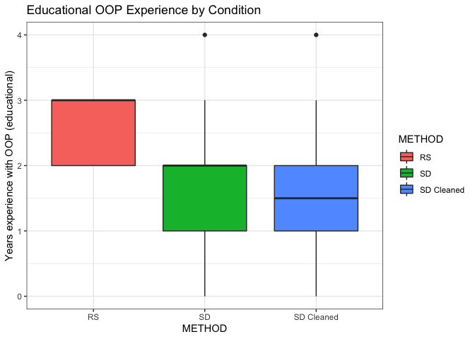
plt = ggplot(data,aes(METHOD,as.numeric(as.character(data$`During your education, how many years of experience did you have with programming?`)),fill=METHOD))+
geom_boxplot()+
ggtitle("Educational Experience Programming by Condition")+
ylab("Years experience with programming (educational)")+
theme_bw()
plt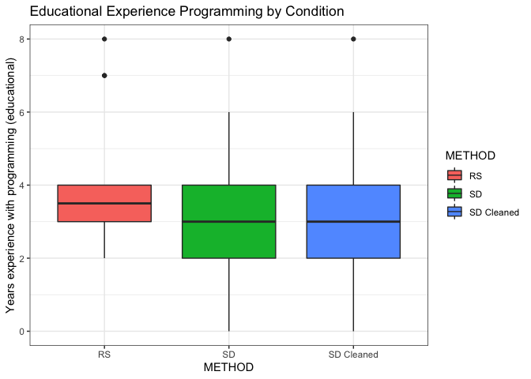
plt = ggplot(Exp,aes(METHOD,GPA, fill=METHOD))+
geom_boxplot()+
ggtitle("GPA by Condition")+
theme_bw()
plt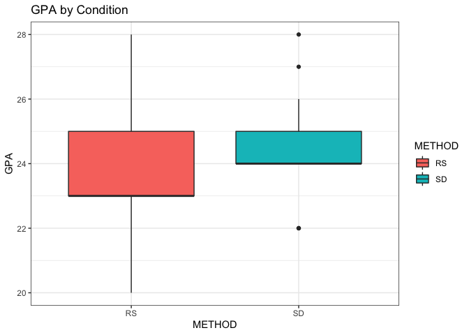
7.4 Quasi-experimental setup
In most cases, the ideal experimental conditions would involve randomly selecting participants and assigning them into conditions (in our case, Sleep Deprivation or Regular Sleep). You can imagine this might be difficult to do with undergraduate students, and difficult to enforce. So this study relies on self-selected students who volunteered to pull an all-nighter before the programming task the next day. If you were to be asked right now to participate in the study, could you afford to not sleep tonight? Or would you need to be in the rested group? Perhaps you have an athletic tournament coming up, or just lost sleep the other night and can’t afford another one. Or maybe, you planned on staying up tonight anyways, so you’d be happy to go in the sleep deprivation group (it will keep you accountable to cramming for that exam, right?). Using this kind of experimental design is referred to as “quasi-experimental”: the populations in the various conditions were not randomly assigned, but were self-selected into. These are perfectly fine studies to run, as long as you conduct a few tests to ensure the validity of your results. Can you guess the biggest issue with a quasi-experimental setup vs. a true experiment? The potential problem is that the self-selecting groups may be inherently different on *measures other than your independent variable**. So when you think you are measuring the effects of sleep deprivation on developer performance, perhaps you already have a significant difference of GPA or programming skill between your sleepers and non-sleepers. You can imagine coming up with a list of things that might differ between those groups, that might actually affect their developer performance more than just the sleep deprivation itself.
7.5 How to Read Scientific Papers
Statistical literacy should be deeply connected to empowerment. As you gain more and more skills in statistics and hypothesis testing, you become able to critique the bombardment of “facts” thrown at you. Many news stories, videos, and articles report on scientific findings, using statistics to back up their conclusions or simply reporting what they found to be the most interesting about that study. If it’s a good article, it should link the original study. With your newfound statistical prowess, you’ll be able to look at the study itself and see if you agree with the interpretations from popular media. I’ll outline a few important things to look for when you’re reading about a study. Follow the checklist for our case study: Need for Sleep.
- What is the motivation for the paper? Why are they studying this?
- What is the research question?
- What is the experimental design? Are there groups to be compared? How many participants in each group? How were they assigned into a condition?
- What are they measuring? How do they define that measure?
- List the tests they run and why (including parametric vs. nonparametric destinction)
- What are the conclusions?
- Do you believe the results?
7.6 Percentage of Acceptance Asserts Passed
In our case, one of the major measures of the paper is the Percentage of Acceptance Asserts Passed (PAAP). An assert statement will trigger an error if it is not true. Therefore, you can set them up in your code to ensure that nothing is going wrong. For instance, if you were working with probabilities, you would want to assert that sum(x) == 1. Participants got 90 minutes to write code to pass the tests in the acceptance test suite, and the percentage of passed tests was recorded. Let’s take a look at some descriptive statistics about PAAP.
#PAAP
summary <-ddply(data,~METHOD,summarise,mean=mean(PAAP),sd=sd(PAAP),max=max(PAAP),min=min(PAAP))
kable(summary)| METHOD | mean | sd | max | min |
|---|---|---|---|---|
| RS | 27.27273 | 17.07347 | 53.84615 | 0 |
| SD | 15.38462 | 13.21730 | 53.84615 | 0 |
| SD Cleaned | 14.83516 | 14.92335 | 53.84615 | 0 |
plt = ggplot(data,aes(PAAP,fill=METHOD))+
geom_density(alpha=.5)+
ggtitle("Distribution of PAAP scores")+
theme_bw()
plt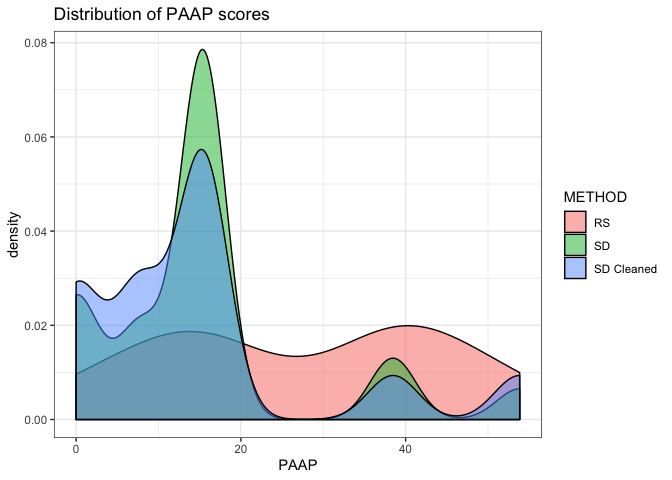
#test PAAP by method for normality
aggregate(formula = PAAP ~ METHOD,
data = data,
FUN = function(x) {y <- shapiro.test(x); c(y$statistic, y$p.value)})## METHOD PAAP.W PAAP.V2
## 1 RS 0.9022845276 0.0330326496
## 2 SD 0.7772646861 0.0002251913
## 3 SD Cleaned 0.7865766146 0.0034218638# NOT NORMAL!7.7 Episodes and Conformance
plt = ggplot(data,aes(`#EPISODES`,fill=METHOD))+
geom_density(alpha=.5)+
ggtitle("Distribution of Episodes")+
theme_bw()
plt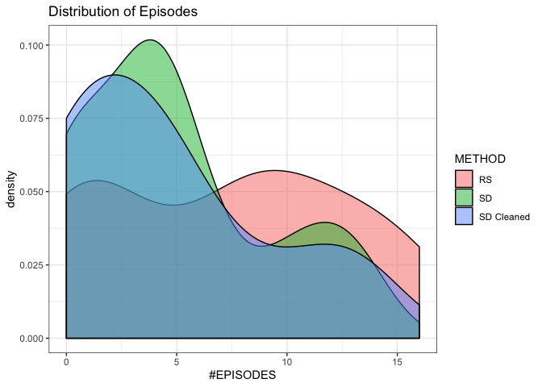
#test EPISODES by method for normality
aggregate(formula = `#EPISODES` ~ METHOD,
data = data,
FUN = function(x) {y <- shapiro.test(x); c(y$statistic, y$p.value)})## METHOD #EPISODES.W #EPISODES.V2
## 1 RS 0.91029839 0.04800951
## 2 SD 0.88793575 0.01718088
## 3 SD Cleaned 0.85854606 0.02907183# NOT NORMAL
plt = ggplot(data,aes(`%CONF`,fill=METHOD))+
geom_density(alpha=.5)+
ggtitle("Distribution of Conformance")+
theme_bw()
plt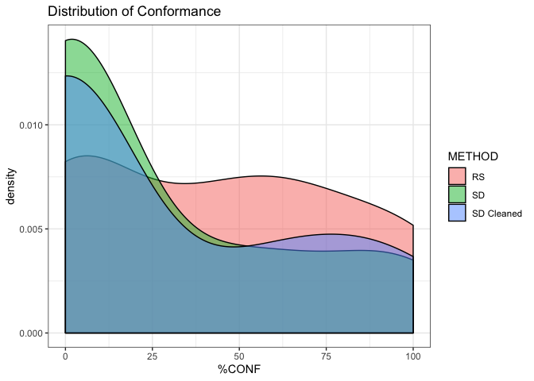
#test %CONF by method for normality
aggregate(formula = `%CONF` ~ METHOD,
data = data,
FUN = function(x) {y <- shapiro.test(x); c(y$statistic, y$p.value)})## METHOD %CONF.W %CONF.V2
## 1 RS 8.712612e-01 8.263399e-03
## 2 SD 7.182923e-01 3.374988e-05
## 3 SD Cleaned 6.997035e-01 3.668629e-04#NOT NORMAL7.8 NOTHING IS NORMAL!!
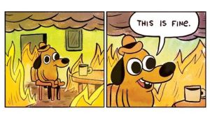 Never fear, we can use nonparametric tests.
7.9 Violin Plots
A violin plot is similar to a boxplot, showing the summary statistics like mean and interquartile ranges. A violin plot also demonstrates the distribution and density of the data, shedding light on where the data “falls” around the summary statistics. It is important to critically think about what a mean is expressing. If I have 20 participants who score PAAP == 58 and 20 participants who score PAAP == 0, the mean will be 29, with not a single participant scoring anywhere near the mean in reality. A violin plot would allow us to discover any misconceptions like that in our data. Below, we plot the different conditions by the different metrics of software quality (PAAP, EPISODES, and CONFORMANCE).
ggplot(data,aes(METHOD,PAAP,fill=METHOD))+
geom_violin(trim=FALSE)+
#stat_summary(fun.data="mean_sdl", mult=1,
#geom="crossbar", width=0.2 )+
stat_summary(fun.data=mean_sdl,
geom="pointrange", color="black")+
theme_bw()## Warning: Computation failed in `stat_summary()`:
## Hmisc package required for this function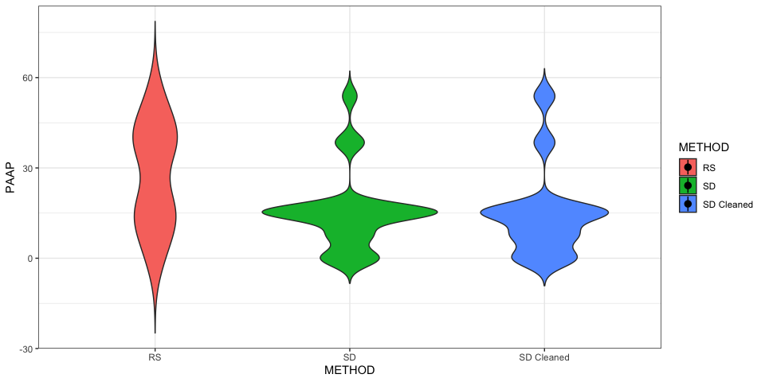
ggplot(data,aes(METHOD,`#EPISODES`,fill=METHOD))+
geom_violin(trim=FALSE)+
stat_summary(fun.data=mean_sdl,
geom="pointrange", color="black")+
theme_bw()## Warning: Computation failed in `stat_summary()`:
## Hmisc package required for this function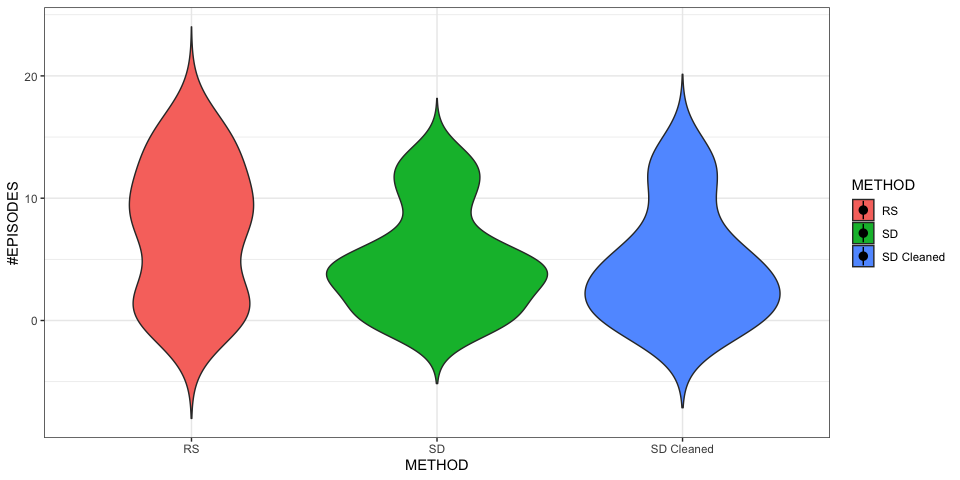
ggplot(data,aes(METHOD,`%CONF`,fill=METHOD))+
geom_violin(trim=FALSE)+
stat_summary(fun.data=mean_sdl,
geom="pointrange", color="black")+
theme_bw()## Warning: Computation failed in `stat_summary()`:
## Hmisc package required for this function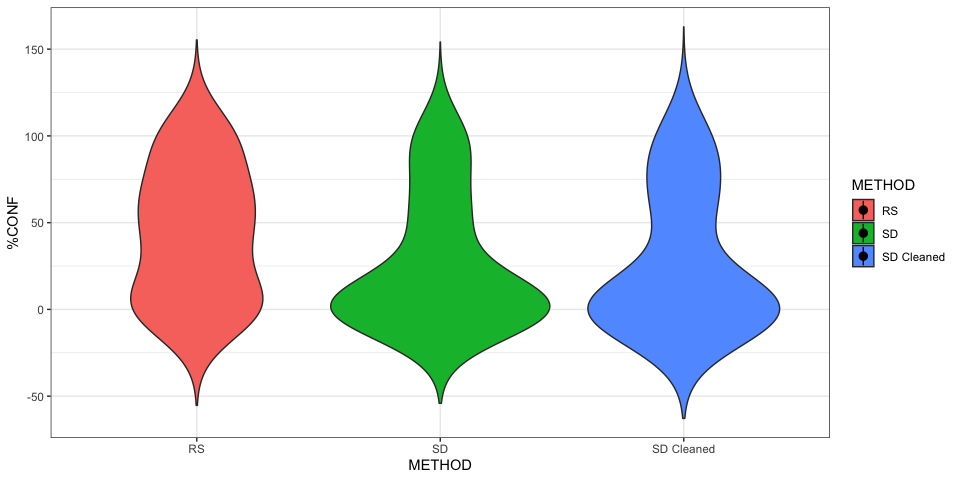 Remember, these are the key comparisons of the study. Most other tests are done to ensure that the study has validity (that it is testing what they say they are testing). After making sure that the populations are comparable, removing participants who did not adhere to the task, and testing data for normality, we can finally try to answer our question!
“To what extent does sleep deprivation impact developers’ performance?”
7.10 Effect Size: Cliff’s Delta
We’ve discussed how a p-value does not actually tell you anything about how large the effect is. With hundreds of people, we could be absolutely positive that sleep deprivation does affect developer performance, but we wouldn’t know anything about how much from a p-value. People tend to think their effect is larger if they get a smaller p-value (such as .05 vs. .00001). But this is only saying the likelihood that the groups being compared are not different. In one case, there is a 5% chance they are actually the same, whereas in the second case, there is only a .001% chance of the groups being actually the same. However confident we are that they are actually different, we still don’t know by how much they differ. In practice, you may find that some software is faster than another with a p-value of .0001. You can be sure that the second software is faster. But what if it is only faster by a single milisecond? Is it worth re-doing the entire system? You be the judge.
So not only do we need to know the p-value, but we also need the effect size. There are several ways to measure effect size, but we must rely on a nonparametric test, due to the non-normality of our data. We use something called Cliff’s delta, which relies on comparing the positive or negative signs between groups. The function below actually contains thresholds for if we can consider the effect to be large, medium, or negligable.
cliffs.d <- function(x,y) {
r = mean(rowMeans(sign(outer(x, y, FUN="-"))))
r = round(r,3)
#cat("Cliff-Deelta val = ", r)
size = "large"
if ( 0.147 < abs(r) & abs(r) < 0.33){
size= "small"
}else{
if ( 0.33 <= abs(r) & abs(r) < 0.474){
size = "medium"
}
}
if (abs(r) < 0.147)
size = "negligible"
return(c(cat("\n Cliff Delta ", size, " (", r, ")\n"), size, r))
}7.11 Parametric vs. NonParametric Statistical Power
Similar to effect size, we care about statistical power. Imagine a scenario where there is a difference, it’s a big difference, but it’s very unlikely that we will get that result again. Then the confidence that we should reject the null hypothesis is high, the effect size is high, but the statistical power is low. Ideally, we would have high statistical power in addition to a large effect size. Below is a function that routes the data to different tests, depending on the normality of the data. We already know that our data requires nonparametric testing. You can see in the code for the nonparametric test that the p value is simulated and averaged in 1000 runs.
StatisticalPowerParam <- function(distribution1, nameDistribution1, distribution2, nameDistribution2, direction = "two.sided"){
#
# parametric analysis
#
sdd <- sd(c(distribution1,distribution2))
delta <- abs(mean(distribution1) - mean(distribution2))
n = max(length(distribution1), length(distribution2))
pow <- power.t.test(n, delta, sdd, sig.level=0.05, power=NULL, type="two.sample", alternative="two.sided")
power = round(pow$power,3)
cat(" Statistical Power", power)
cat(" beta-val", 1- power, "\n")
return(power)
}
StatisticalPowerNonParam <- function(distribution1, nameDistribution1, distribution2, nameDistribution2){
# non-parametric analysis
M1 <- mean(distribution1)
M2 <- mean(distribution2)
sd1 <- sd(distribution1)
sd2 <- sd(distribution2)
n1 <- length(distribution1) ### sample size
n2 <- length(distribution2) ### sample size
n <- n1 + n2
pval <- replicate(1000, wilcox.test(rnorm(n1,M1,sd1), rnorm(n2,M2,sd2), paired=FALSE)$p.value)
power = round(sum(pval < 0.05)/1000,3)
cat(" Statistical Power", power, "\n")
cat(" beta-val", 1- power)
return(power)
}7.12 Wilcoxon (aka Mann-Whitney) Test
The big concept to follow here is that because our data is not normal it warrants a nonparametric comparison test. When you have two groups that are not normally distributed, you can use the wilcox.test function in R. Each nonparametric test has a parametric counterpart, which tends to be more powerful because the data is normally distributed and can be more sensitively represented using parameters. The Wilcoxon test’s parametric counterpart is the t-test. We can see that if our data did conform to a normal distribution, the below function would route the data to the parametric test, which is a t-test. The Wilcoxon test and the t-test will give us confidence that we can reject the null hypothesis, but the function also outputs the effect size, statistical power, and percentage improvement between groups.
Control_vs_Treatment <- function(nameTreatment, treatment, nameControl, control, direction = "two.sided") {
sTreatment <- shapiro.test(treatment)
sControl <- shapiro.test(control)
if (sTreatment$p.value > 0.05 && sControl$p.value > 0.05) {
cat(" Parametric analyses allowed \n", nameTreatment, "is normal ", round(sTreatment$p.value,4), " \n",
nameControl, " is normal ", round(sControl$p.value,4), "\n")
# #### The distributions are both normal parametric analyses can be computed.
# # t-test
a <- t.test(treatment, control, alternative = direction, paired = FALSE, exact = FALSE, correct = TRUE)
a = round(a$p.value,3)
# # ANOVA
# a <-anova(lm(dataExp$X.TUS ~ dataExp$Method))
# a = round(as.numeric(a$`Pr(>F)`[1]),3)
effectSize <- dCohen(treatment, control, "independent")
s <- StatisticalPowerParam(treatment, nameTreatment, control, nameControl, direction)
}else {
cat(" Non-parametric analyses \n", nameTreatment, ": ", round(sTreatment$p.value,4), " \n", nameControl,
": ", round(sControl$p.value,4))
a <- wilcox.test(treatment, control, alternative = direction, paired = FALSE, exact = FALSE,
correct = TRUE)
#a = a$p.value
a = round(as.numeric(a[3]),3)
effectSize <- cliffs.d(treatment,control)
s = StatisticalPowerNonParam(treatment, nameTreatment, control, nameControl)
}
#descriptive stats for treatment
t = summary(treatment)
#descriptive stats for control
c = summary(control)
impr = ((t[4]-c[4])/c[4])*100
impr = round (impr,3)
cat("\n Mean improvement", impr,"\\%")
cat("\n Statistical test p-value (i.e., Hnx) ", a, "\n")
if (a < 0.05){
cat("*** STATISTICALLY SIGNIFICANT DIFFERENCE ***\n")
}
cat("&", a, "&", effectSize, "&", impr, "&", s )
}7.13 Results
Control_vs_Treatment('SD PAAP',SD_Cleaned$PAAP,'RS PAAP',NOSD_Cleaned$PAAP) #large and significant## Non-parametric analyses
## SD PAAP : 0.0034
## RS PAAP : 0.0344
## Cliff Delta large ( -0.476 )
## Statistical Power 0.66
## beta-val 0.34
## Mean improvement -48.077 \%
## Statistical test p-value (i.e., Hnx) 0.016
## *** STATISTICALLY SIGNIFICANT DIFFERENCE ***
## & 0.016 & large -0.476 & -48.077 & 0.66Control_vs_Treatment('SD #EPISODES',SD_Cleaned$`#EPISODES`,'RS # EPISODES',NOSD_Cleaned$`#EPISODES`) #medium but not significant## Non-parametric analyses
## SD #EPISODES : 0.0291
## RS # EPISODES : 0.0871
## Cliff Delta small ( -0.32 )
## Statistical Power 0.358
## beta-val 0.642
## Mean improvement -39.623 \%
## Statistical test p-value (i.e., Hnx) 0.116
## & 0.116 & small -0.32 & -39.623 & 0.358Control_vs_Treatment('SD %CONF',SD_Cleaned$`%CONF`,'RS %CONF',NOSD_Cleaned$`%CONF`) #small## Non-parametric analyses
## SD %CONF : 4e-04
## RS %CONF : 0.0164
## Cliff Delta small ( -0.293 )
## Statistical Power 0.26
## beta-val 0.74
## Mean improvement -40.409 \%
## Statistical test p-value (i.e., Hnx) 0.135
## & 0.135 & small -0.293 & -40.409 & 0.26We successfully replicate the findings in the Need For Sleep paper, demonstrating that there was a significant difference for Percentage of Acceptance Asserts Passed: those who were sleep deprived performed 48% worse on the programming task than those who had regular sleep.